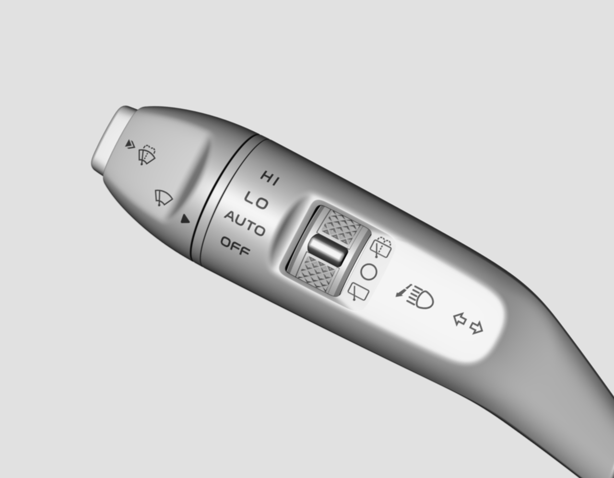

怀档开关左侧手柄的末端为PUSH按键，可以按下2个档位
点动：车辆上电后，将怀档开关左侧手柄末端的PUSH按键按至1档并立即释放，前雨刮将刮动1次；若将PUSH按键按至1档并保持，前雨刮将以为低速档持续刮动直到释放PUSH按键。
洗涤：车辆上电后，将怀档开关左侧手柄末端的PUSH按键按至2档将执行洗涤功能。
怀挡开关左侧手柄有4个前雨刮控制档位及3个后雨刮控制档位
OFF：关闭
INT/AUTO：间隙档位雨刮/自动感应雨刮
LO：低速
HI:高速
后雨刮洗涤：后雨刮喷水，并刮刷数次
后雨刮关闭：后雨刮关闭
后雨刮刮刷：后雨刮间隙刮刷